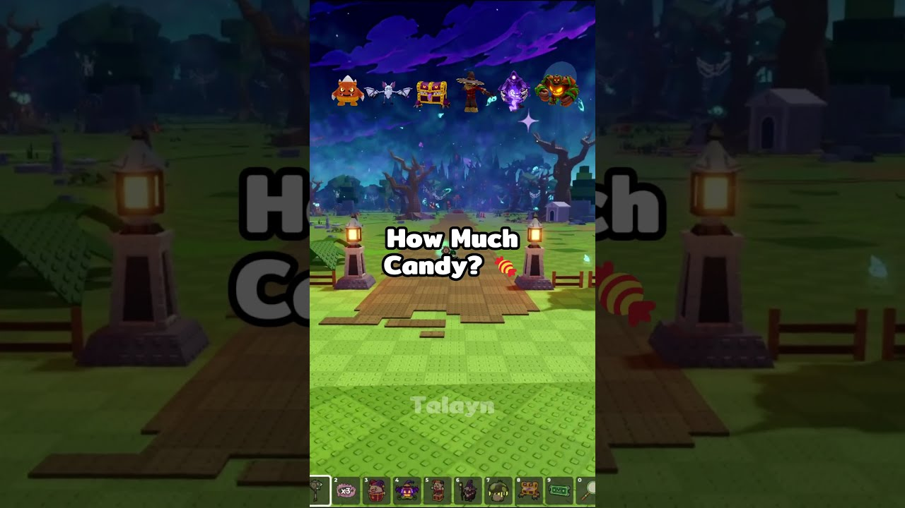

🍬 Candy Corn în Steal An Egg: cât candy îți trebuie?

Talayn are ~18,8K vizualizări (citite pe 18 oct) cu un short de 22 de secunde despre Candy Corn în Steal An Egg. Clipul intră direct pe rândul de recompense din shop, cu întrebarea „How Much Candy?” pe ecran, fără nicio introducere. Asta e tot cârligul: omul vrea să afle pe loc cât îl costă fiecare lucru, așa că stă până la final.
Ce recompense apar exact în shop nu e confirmat (CLAIM), așa că nu le listăm aici până nu le verificăm noi în joc.
Ideea VEXU: „Nu-ți cheltui Candy Corn-ul până nu vezi cât costă fiecare chestie!” Intrăm direct pe shop, fără intro, și arătăm prețurile reale din joc, verificate de noi în clipul nostru. Scurt, sub 25 de secunde, cu câte un prag de preț pe ecran pentru fiecare recompensă. TikTok, de căutat în aplicație: „steal an egg candy corn rewards” și „steal an egg halloween shop”.
Follow pe TikTok @vexu_online și abonare pe YouTube la VEXU Online. Follow = Au ce bile! 💥